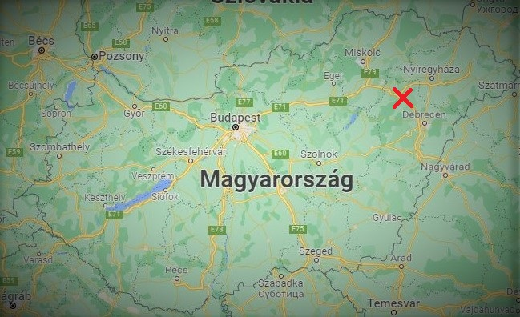

Egy kis különálló ország vagyunk Magyarország területén belül.
Államformánk demokratikus diktatúra. Csabi az első református pápa.
Magyarországgal 1932-ben kezdtük el a tárgyalásokat a kiválásról, azonban
ügyünk lefolyása hosszú ideig, egészen 2021 tartott. Ebben az évben végre
hivatalosan is saját országunk van önálló kül- és belpolitikával, saját törvényekkel
évente tartunk cserépszavazást országunk központjában a református katedrálisban.
Alapelvünk a háború és erőszak tagadása, a béke fenntartása a végletekig.
Nemzeti italunk a grapefrutos üdítőital, amelyet helyben termesztett grapefruitból csinálunk.
Az ország hetente tart nemzeti szintű bálokat, amelyeket DJ Rozália vezet.
Az országból nem lehet kijutni, csak speciális indokok esetében pl: betegségek.
Nemzeti gyógyítónk és pszihiáterünk Jónás sámán, akinek sok beteg köszönheti életét.
A falu halász gazdasága kiemelkedő. A halakat 2x2 méteres kerti tóból halásszuk ki, ami a katedrális
kertjében van.
A falu legfontosabb embere Kata mama a dinnyehordozó, aki a falu dinnye importját rendezi. Kamionjával
naponta 20 tonna dinnyét szálít be Magyarországból.
Kata mama különleges zöld lappal rendelkezik, amivel büntetlenül át mehet az országhatárokon.
Pénzügyeinket Patrícia közgazdász rendezi, aki miatt Dundelpuszta lett a leggazdagabb ország.
Transzvesztita jósnőnk Székely Magdi, országunk jövőjét jósolja meg. Ami alapján gazdasági ügyeinket,
a lehető legjobban tudjuk kezelni.
Egyetlen bevándorlónk El Pepe, Katalóniából szökött meg, és mi befogadtuk.
A Dundelpusztai közösségek a világszerte híres az összetartásáról.
Lakosságunk nagyrészt halászokból és grapefruit termesztőkből áll, de
egy két arisztokrata is előfordul.
Legtöbben magyarok vagyunk, de található nálunk spanyol, észak-koreai és japán is.
Az ENSZ majdnem minden országa szövettségre lépett velünk. Ezenkívül egykét afrikai
törzs is támogat minket.
Nemzetünkre jellemző a családias légkör.
Lakosságszám
27
Nemzetiségek
4
Szövetségesek
157+
Miket szokott Magdi jósolni?
Lehetséges gazdasági csődöket, személyes jövőbeli hibákat, minden egyebet a halálon kívül.
Hol helyeszkedik el az ország geológiailag?
Debrecentől Észak-nyugati irányban.

Miért váltatok ki Magyarországból?
Magyarország egy igen jól teljesítő ország, de mi hittük, hogy még ennél is többre lennénk képesek.
Ezenkívül Guinisz rekordot akartunk dönteni, a legkissebb ország címen, amit végül meg is nyerünk.
Saját országként újjabb lehetőségek nyíltak meg előttünk.
Konfliktusai miatt száműzték.
Országunkban havonta tartunk általános cserépszavazásokat, amelyeken eldöntjük, hogy van -e olyan aki
nem érdemli meg az országunk határain belül fojtatott életet. Ha valaki gazdaságilag nem
viszi előre az ország fejlődését, vagy másokkal konfliktusokat kelt.
Az ehavi cserépszavazást, tegnap tartottuk, amelynek alkalmával Ifj. Lakatos Györgyöt száműztük,
ritkán teszünk ilyet, de a sokak által György bácsiként is emlegetett személy, rendszeresen került ittas
állapotba, és ezen alkalmak nagyrészében, verekedett vagy szitkozódott másokkal.
Györgyöt a szavazás után Magyarországra küldtük, ahhonnan 10 év után visszatérhet, ha egy pszihológiai
teszten bebizonyosodik, hogy megváltozott.
Jövőhéten lesz grapefruit fesztivál!
Falunk híresen jó grapefruit levet készít.
Gazdáink évente versenyeztetik, saját receptjeik alapján készített, levüket.
Az üdítőket afrikai törzsekből kiválogatott szakácsok, pontozzák.
A jeles alkalmat, közös vacsorával zárjuk, amelyet a katedrális oltárán tartunk meg.
Koncert lesz a faluházban.
Jótékonyságból koncertet tart a zenekarunk, az estén összegyűlt pénzt a Pápa kapja meg fizetésként.
Nemzetünk méltón híres, a csodásan megkomponált zenéiről.
DJ Rozália akit tiktokon csak a zene istennőjeként emlegetnek, csodálatos műveket alkot.
Persze a zenekar 8 zenésze nélkül az egész nem is érne semmit.